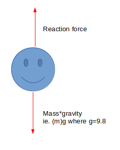
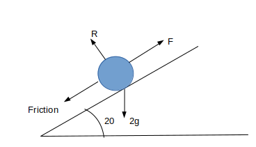
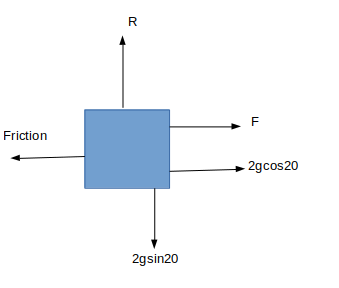
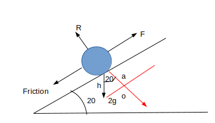

We use Forces using Newtons second law of F=MA which is Force = mass x acceration
This means all the forces acting on a particle is equal to its mass multiplied by the acceleration of its movement.
For example, a person standing still will have a reaction force off the ground going up, and their weight as a force going down.
Here we see the Force is R-mg which will be equal to ma. The force is the forces one way-the forces the other. In this scenario
it doesn't matter which way round they are, but if the particle is moving in a direction, the larger force - the smaller force is the
total force
If your particle is not on the ground, but hanging on a inextensible
(constant tention throughout) string then the force through it is Tension, not Reaction.
Example:
1)A fish of mass 5kg is stationary and is suspended from a vertical fishing line. What is the tension in the fishing line?
We know that the force is the Tension - the weight
T-5g=5a
As the fish is stationary, a=0
Therefore T-5g
If a surface is rough we know that friction will be present, which is another force acting against the direction of movement
Friction = Reaction force x µ. µ is the coefficient of friction.
Example:
1)A particle of 2kg is moving up a rough slope angled at 20º with force F, at an acceleration of 10 m/s^2. If µ is 0.8, Find the F
Lets draw a diagram
The mass is going down, so we will need to split this into two components to compare with the rest of the forces
Using trig and S(o/h) C(a/h) T(o/a) we can work out the two components.
We use these diagrams to find the F=MA components ->: F+2gcos20-µR=2(10) and ^: R-2gsin20=2(0) therefore R=2gsin20
By subing in values we get F+2gcos20-(0.8)2gsin20=2(10) Therefore F = 6.95 (3sf)